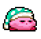

Es un personaje ficticio y el protagonista de la serie de videojuegos Kirby, diseñado por Masahiro Sakurai en 1992. Desde su primera aparición en Kirby's Dream Land para Game Boy se ha convertido en uno de los personajes más populares de Nintendo.
Es un personaje perteneciente a la franquicia Pokémon, que hizo su primera aparición en los videojuegos Pokémon Rojo y Azul ( Rojo y Verde en Japón), siendo el Pokémon número 25 de la lista de Pokémon registrada en el Pokédex nacional.
Es un personaje ficticio y antagonista principal en la saga de videojuegos The Legend Of Zelda. Es la reencarnación del heraldo de la muerte, además de un hechicero habilidoso con una notable fuerza física